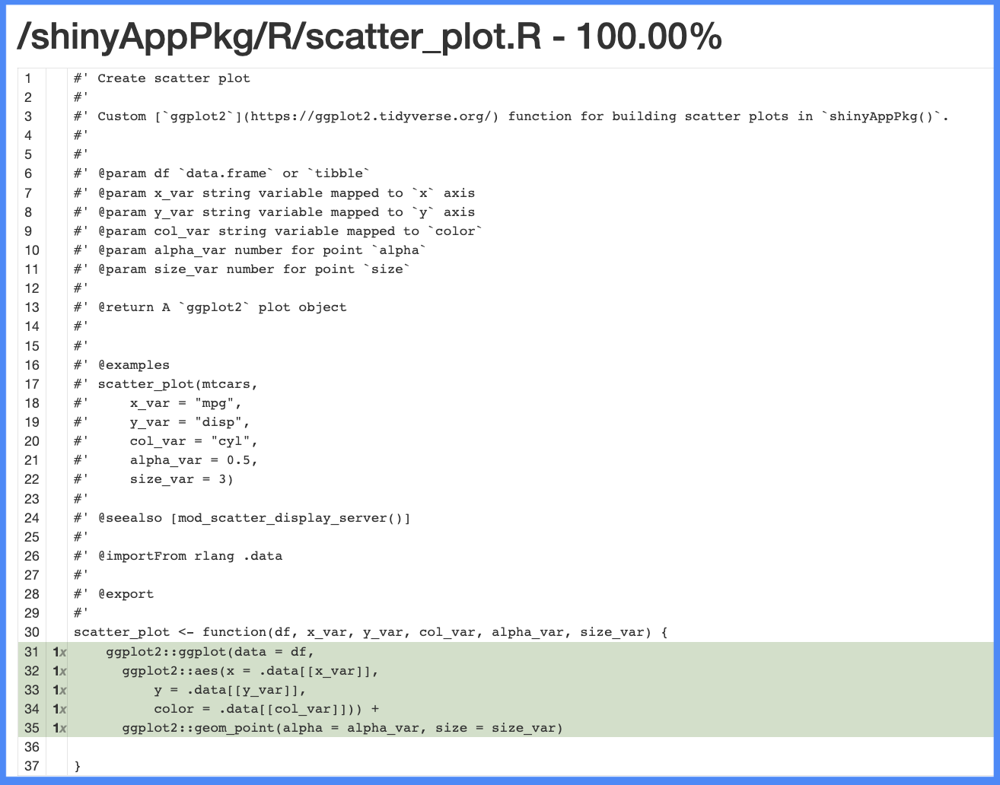

# install.packages('pak')
pak::pak('mjfrigaard/shinypak')12 Test tools
This chapter introduces tools to help write clean and efficient tests. These files, folders and methods can be included in our app-package test suite and are described in-depth in R Packages, 2ed, and the testthat documentation., but within the context of a standard R package. The sections below contain examples of each tool implemented in our app-package.1
One of the recent updates to the testthat package (version 3.2.0) emphasizes limiting code that exists outside of our tests.2
“Eliminating (or at least minimizing) top-level code outside of
test_that()will have the beneficial effect of making your tests more hermetic. This is basically the testing analogue of the general programming advice that it’s wise to avoid unstructured sharing of state.” - Self-sufficient tests, R Packages, 2ed
Strategies for reducing or removing the code outside of test_that() tests include:3
Move file-scope logic to either narrower scope (just this test) or a broader scope (all files).
It’s ok to copy and paste: test code doesn’t have to be super DRY. Obvious >>> DRY
Code outside of test_that() usually serves a specific purpose (load or manipulate data, set options, create folders or files, etc). The topics in this chapter will demonstrate how to include these behaviors in our tests without placing code outside of the test scope.
If you decide to adopt the BDD functions in your test suite, I highly recommend creating code snippets to reduce the typing/copying and pasting.4
You can edit keyboard shortcuts by selecting Tools > Edit Code Snippets…
Snippets
snippet bddback
describe(
"Background: ${1:background}
Given ...
And ...", code = {
})
snippet bddfeat
describe(
"Feature: ${1:feature}
As a ...
I want ...
So that ...", code = {
})
snippet bddscene
it(
"Scenario: ${1:scenario}
Given ...
When ...
Then ...", code = {
expect_equal(TRUE, TRUE)
})
snippet bddtemp
describe(
"Feature: ${1:feature}
As a ...
I want ...
So that ...", code = {
it(
"Scenario: ${2:scenario}
Given ...
When ...
Then ...", code = {
expect_equal(TRUE, TRUE)
})
})
Templates
# bddback ----
describe(
"Background: background
Given ...
And ...", code = {
})
# bddfeat ----
describe(
"Feature: feature
As a ...
I want ...
So that ...", code = {
})
# bddscene ----
it(
"Scenario: scenario
Given ...
When ...
Then ...", code = {
expect_equal(TRUE, TRUE)
})
# bddtemp ----
describe(
"Feature: feature
As a ...
I want ...
So that ...", code = {
it(
"Scenario: scenario
Given ...
When ...
Then ...", code = {
expect_equal(TRUE, TRUE)
})
})Snippets also work well with tab completion in the Posit Workbench IDE:

12.1 Fixtures
Test fixtures can be anything used to create repeatable test conditions (data, file paths, functions, etc.). Good test fixtures provide a consistent, well-defined test environment, and then are removed/destroyed when the test is executed. This ensures any changes made during the test don’t persist or interfere with future tests.5
Launch app with the shinypak package:
launch('12.1_tests-fixtures')In R packages, test fixtures are stored in the tests/testthat/fixtures/ folder:6
tests/
├── testthat/
│ └── fixtures/
└── testthat.R12.1.1 Test data
Large static data files are an example of a test fixture.7 Any code used to create test data should be stored with the output file (using a clear naming convention).
For example, I’ve stored the code used to create a ‘tidy’ version of the ggplot2movies::movies data along with the output dataset in tests/testthat/fixtures/:
tests
├── testthat
│ ├── fixtures
│ │ ├── make-tidy_ggp2_movies
│ │ └── tidy_ggp2_movies.rds
│ └── test-scatter_plot.R
└── testthat.R
3 directories, 4 files- 1
-
The code used to create the test data (
make-make_tidy_ggp2_movies.R) - 2
-
The test data file (i.e.,
tidy_ggp2_movies.rds):
Data files stored in tests/testthat/fixtures/ can be accessed with testthat::test_path() inside each test.
12.1.2 Example: test fixture
Below is a test that answers the question, ‘does the plot generate without producing an error?’ when using the tidy_ggp2_movies.rds test fixture with the scatter_plot() utility function. This type of test appropriate because we want to confirm the data source (tidy_ggp2_movies) will generate a plot object when passed to the scatter_plot() utility function, not necessarily the specific contents of the graph.8
testthat::describe(
"Feature: Scatter plot data visualization
As a film data analyst
I want to explore movie review data from IMDB.com
So that I can analyze relationships between movie reivew metrics
Background:
Given I have data with IMDB movie reviews
And the data contains continuous variables like 'rating'
And the data contains categorical variables like 'mpaa'",
code = {
testthat::it(
"Scenario: Scatter plot initial x, y, color values
When I launched the Scatter Plot Data Visualization
And I have a dataset of movie reviews from IMDB
Then the scatter plot should show 'Rating' on the x-axis
And the scatter plot should show 'Length' on the y-axis
And the points on the scatter plot should be colored by 'MPAA' rating",
code = {
ggp2_scatter_inputs <- list(
x = "rating",
y = "length",
z = "mpaa",
alpha = 0.75,
size = 3,
plot_title = "Enter plot title"
)
tidy_ggp2_movies <- readRDS(test_path("fixtures",
"tidy_ggp2_movies.rds"))
app_graph <- scatter_plot(tidy_ggp2_movies,
x_var = ggp2_scatter_inputs$x,
y_var = ggp2_scatter_inputs$y,
col_var = ggp2_scatter_inputs$z,
alpha_var = ggp2_scatter_inputs$alpha,
size_var = ggp2_scatter_inputs$size
)
expect_true(ggplot2::is.ggplot(app_graph))
})
})- 1
-
Feature
- 2
-
Scenario
- 3
-
Test inputs
- 4
-
Test fixture
- 5
-
Create observed object
- 6
- Expectation
If the data tidy_ggp2_movies.rds in tests/testthat/fixtures/ are going to be used repeatedly, it might also make sense to store it in inst/extdata/ or data-raw/. Test fixtures are described in-depth in R Packages, 2ed and in the testthat documentation.
12.2 Helpers
“Helper files are a mighty weapon in the battle to eliminate code floating around at the top-level of test files.” Testthat helper files, R Packages, 2ed
Launch app with the shinypak package:
launch('12.2_tests-helpers')Test helpers reduce repeated/duplicated test code. In general, objects or values that aren’t large enough to justify storing as static test fixtures can be created with helper functions. Helper functions are stored in tests/testthat/helper.R, which is automatically loaded with devtools::load_all():
tests/
├── testthat/
│ ├── fixtures/
│ │ ├── make-tidy_ggp2_movies.R
│ │ └── tidy_ggp2_movies.rds
│ ├── helper.R
│ └── test-scatter_plot.R
└── testthat.R- 1
-
Test fixture scripts and
.rdsfiles
- 2
-
Helper functions
- 3
- Test file
Test helpers should only be created if they make testing easier when the tests fail. The article, ‘Why Good Developers Write Bad Unit Tests’, provides great advice on complexity vs. clarity when writing unit tests,
‘think about what will make the problem obvious when a test fails. Refactoring may reduce duplication, but it also increases complexity and potentially obscures information when things break.’
R programmers resist copy + paste programming, and in most cases this makes sense. After all, R is a functional programming language, so it’s tempting to bundle any repeated code into a function and store it in the tests/testthat/helper.R file.
However, when we’re writing tests, it’s more important that tests are easy to read and understand when they fail.
For example, consider the ggp2_scatter_inputs inputs passed to the scatter_plot() function in the previous test:
ggp2_scatter_inputs <- list(
x = "rating",
y = "length",
z = "mpaa",
alpha = 0.75,
size = 3,
plot_title = "Enter plot title"
) We could write a var_inputs() function that stores these values in a list. In our tests, this would allow us to use var_inputs() with the same ‘reactive syntax’ we use with scatter_plot() in the module server function:
var_inputs <- function() {
list(x = "rating",
y = "length",
z = "mpaa",
alpha = 0.75,
size = 3,
plot_title = "Enter plot title")
}
var_inputs()
## $x
## [1] "rating"
##
## $y
## [1] "length"
##
## $z
## [1] "mpaa"
##
## $alpha
## [1] 0.75
##
## $size
## [1] 3
##
## $plot_title
## [1] "Enter plot title"While this removes duplicated code, it also makes it less clear for the reader what var_inputs() contains and where it was created (without opening the helper.R file).
tidy_ggp2_movies <- readRDS(test_path("fixtures",
"tidy_ggp2_movies.rds"))
app_graph <- scatter_plot(
tidy_ggp2_movies,
x_var = var_inputs()$x,
y_var = var_inputs()$y,
col_var = var_inputs()$z,
alpha_var = var_inputs()$alpha,
size_var = var_inputs()$size)
testthat::expect_true(ggplot2::is.ggplot(app_graph))- 1
-
Load test fixture
- 2
-
Identical to the code in
mod_scatter_display_server()
In contrast, the make_ggp2_inputs() function below creates inputs for the scatter_plot() utility function:
make_ggp2_inputs <- function() {
glue::glue_collapse("list(x = 'rating',
y = 'length',
z = 'mpaa',
alpha = 0.75,
size = 3,
plot_title = 'Enter plot title'
)"
)
}I can call make_ggp2_inputs() in the Console and it will return the list of values to paste into each test:
make_ggp2_inputs()
list(y = 'audience_score',
x = 'imdb_rating',
z = 'mpaa_rating',
alpha = 0.5,
size = 2,
plot_title = 'Enter plot title'
)This reduces the number of keystrokes per test, but doesn’t obscure the source of the values in the test.
glue::glue_collapse() is your friend when you want to quickly reproduce code for your tests. make_var_inputs() creates the list of inputs for testing the original movies data:
make_var_inputs <- function() {
glue::glue_collapse("list(y = 'audience_score',
x = 'imdb_rating',
z = 'mpaa_rating',
alpha = 0.5,
size = 2,
plot_title = 'Enter plot title'
)")
}
Violating the DRY principle
If you have repeated code in your tests, consider the following questions below before creating a helper function:
Does the code help explain what behavior is being tested?
Would a helper make it harder to debug the test when it fails?
It’s more important that test code is obvious than DRY, because it’s more likely you’ll be dealing with this test when it fails (and you’re not likely to remember why all the top-level code is there).
12.2.1 Test logger
I prefer test outputs to be verbose, so I usually create a test_logger() helper function that allows me to give more context and information with each test:
# test logger helper
test_logger <- function(start = NULL, end = NULL, msg) {
if (is.null(start) & is.null(end)) {
cat("\n")
logger::log_info("{msg}")
} else if (!is.null(start) & is.null(end)) {
cat("\n")
logger::log_info("\n[ START {start} = {msg}]")
} else if (is.null(start) & !is.null(end)) {
cat("\n")
logger::log_info("\n[ END {end} = {msg}]")
} else {
cat("\n")
logger::log_info("\n[ START {start} = {msg}]")
cat("\n")
logger::log_info("\n[ END {end} = {msg}]")
}
}test_logger() can be used to ‘log’ the start and end of each test, and it includes a message argument (msg) I’ll use to reference the test description argument in each it() call.9
I tend to use functions like test_logger() enough to justify placing them in a testing utility file (R/testthat.R) below R/. Including testing functions in the R/ folder also ensures they’re documented (and any dependencies become part of your app-package).10
12.2.2 Test development
While developing, using keyboard shortcuts makes it easier to iterate between building fixtures, writing and running tests, and checking code coverage.
Ctrl/Cmd + T
devtools:::test_active_file()
FAIL 0 | WARN 0 | SKIP 0 | PASS 0 ]
INFO [2023-10-27 12:39:23] [ START fixture = tidy_ggp2_movies.rds]
[ FAIL 0 | WARN 0 | SKIP 0 | PASS 1 ]
INFO [2023-10-27 12:39:23] [ START fixture = tidy_ggp2_movies.rds]
INFO [2023-10-27 12:39:23] [ START data = movies.rda]
[ FAIL 0 | WARN 0 | SKIP 0 | PASS 2 ]
INFO [2023-10-27 12:39:23] [ END data = movies.rda]Ctrl/Cmd + Shift + R
devtools:::test_coverage_active_file()
12.2.3 Example: snapshots
Writing tests for UI outputs can be difficult because their “correctness” is somewhat subjective and requires human judgment. If the expected output we’re interesting in testing is cumbersome to describe programmatically, we can consider using a snapshot tests. Examples of this include UI elements (which are mostly HTML created by Shiny’s UI layout and input/output functions) and data visualizations.11
I’ve included a small UI function (text_logo()) in the R/ folder of moviesApp:
text_logo <- function(size = 'h3') {
if (any(size %in% c("h1", "h2", "h3", "h4", "h5", "h6"))) {
HTML(
paste0(
"<span>\n",
paste0(" <", size, ">", collapse = ""), "\n",
" <code>√\\/--‹(•_•)›--√\\/</code>\n",
paste0(" <", size, "/>", collapse = ""), "\n",
"</span>\n"
)
)
} else {
rlang::abort(paste(size, "isnt supported", sep = " "))
}
}This function generates the HTML so we can include a small logo in the UI.12
The output in the UI:
√\/--‹(•_•)›--√\/
The pre-rendered HTML:
<span>
<h3>
<code>√\/--‹(•_•)›--√\/</code>
</h3>
</span>Reviewing the entire HTML contents of movies_ui() to see if text_logo() is working isn’t practical, but we can store it’s results in a snapshot file using expect_snapshot(). In tests/testthat/test-text_logo.R, I’ll write the following tests:13
Warning: snapshots and multiple line descriptions
It’s important to include any multiple-line text in the describe() block when creating snapshots with expect_snapshot(). Multiline text in the desc of test_that() will always overwrite the snapshot file.
Thank you to @LDSamson for bringing this to my attention!
See this issue for more information.
Confirm the default
sizeargument:describe( "Scenario: Generating a logo with default size Given the user did not specify a [size] in text_logo() When text_logo() is invoked without a [size] argument Then the correct HTML for a ['h3'] text logo is returned", code = { test_that("text_logo()", code = { test_logger(start = "snap", msg = "text_logo()") expect_snapshot(text_logo()) test_logger(end = "snap", msg = "text_logo()") }) })Confirm a new
sizeargument:describe( "Scenario: Generating a logo of a specified size Given the user wants a ['h1'] sized text logo When text_logo(size = 'h1') is invoked Then the correct HTML for a ['h1'] text logo is returned", code = { test_that("text_logo('h1')", code = { test_logger(start = "snap", msg = "text_logo('})')") expect_snapshot(text_logo("h1")) test_logger(start = "snap", msg = "text_logo('h1')") }) })Confirm an invalid
sizeargument:describe( "Scenario: Attempting to generate a logo with an invalid size Given the user specifies an invalid [size] for the text logo When text_logo() is invoked with an invalid [size] argument Then an error is returned stating the [size] is not recognized", code = { test_that("text_logo('invalid')", code = { test_logger(start = "snap", msg = "text_logo('invalid')") expect_error(text_logo("massive"), NULL) test_logger(end = "snap", msg = "text_logo('invalid')") }) })
When I test this file, I see the following results and output from test_logger() along with two warnings about the creating of the snapshot files:
devtools:::test_active_file()[ FAIL 0 | WARN 0 | SKIP 0 | PASS 0 ]
INFO [2023-11-17 08:50:55] [ START snap = text_logo()]
[ FAIL 0 | WARN 1 | SKIP 0 | PASS 1 ]
INFO [2023-11-17 08:50:55] [ END snap = text_logo()]
INFO [2023-11-17 08:50:55] [ START snap = text_logo('h1')]
[ FAIL 0 | WARN 2 | SKIP 0 | PASS 2 ]
INFO [2023-11-17 08:50:55] [ START snap = text_logo('h1')]
INFO [2023-11-17 08:50:55] [ START snap = text_logo('invalid')]
[ FAIL 0 | WARN 2 | SKIP 0 | PASS 3 ]
INFO [2023-11-17 08:50:55] [ END snap = text_logo('invalid')]── Warning (test-text_logo.R:13:7): text_logo() ──
Adding new snapshot:
Code
text_logo()
Output
<span>
<h3>
<code>√\/--‹(•_•)›--√\/</code>
</h3>
</span>
── Warning (test-text_logo.R:22:7): text_logo('h1') ──
Adding new snapshot:
Code
text_logo("h1")
Output
<span>
<h1>
<code>√\/-‹(•_•)›-√\/</code>
</h1>
</span>
[ FAIL 0 | WARN 2 | SKIP 0 | PASS 3 ]12.2.4 Reviewing _snaps/
Snapshots are stored in the tests/testthat/_snaps/ folder. The output from expect_snapshot_file() is a markdown file with contents similar to what we saw above in the warning message. Should the markdown file contents change in future test runs, the tests will fail and we’ll be prompted to review the changes. 14
For example, if the <span> changed to a <div> in text_logo() and caused a test failure, I could review the changes in tests/testthat/_snaps/text_logo.md with testthat::snapshot_review('text_logo'):

testthat::snapshot_review('text_logo')Accepting snapshot: 'tests/testthat/_snaps/text_logo.md'Recap
Recap: test suite
Shiny app-packages test tools
Fixtures: Fixtures prepare the test environment and the initial state. The
tidy_ggp2_movies.rdsdata is a test fixture, and it creates thetidy_ggp2_moviesdata within the test scope.Helpers: If find yourself writing small, reusable pieces of code to perform specific tasks inside your tests, consider converting them into a function in
tests/testthat/helper.R.Snapshots: Test complex outputs using snapshots, but cautiously. Snapshots are susceptibile to failure with small (sometimes inconsequential) changes, which produce false negatives test failures.
The three chapters in R Packages, 2ed, dedicated to testing are Testing basics, Designing your test suite, and Advanced testing techniques↩︎
Read a summary of the changes to the
testthatpackage on the tidyverse blog↩︎these tips (and more!) were covered in the Package Development Masterclass delivered at posit::conf(2023)↩︎
Read more about creating code snippets on the Posit website.↩︎
For a concrete example, see this article on self-cleaning tests.↩︎
The name ‘
fixtures’ isn’t required (you can name this folder anything).↩︎Creating a tidied version of
ggplot2movies::movieswould be costly to re-create with every test, so it’s advised to store it as an static test fixture.↩︎Snapshot tests would be more appropriate for answering the question, ‘is the plot visually correct?’.↩︎
If you like verbose logging outputs, check out the
loggerpackage↩︎Placing common files for testing below
R/is covered in R Packages, 2ed↩︎Graph snapshots are covered in Chapter 23.↩︎
This is a simple example, but I chose it because it needs some tricky escape characters to work.↩︎
Mastering Shiny covers creatng a snapshot file to test UI elements, but also notes this is probably not the best approach.↩︎
We’ll encounter this folder again in the Chapter 14 on system tests with
shinytest2.↩︎